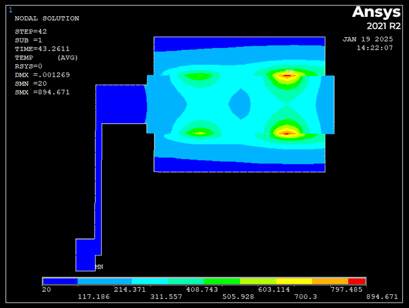
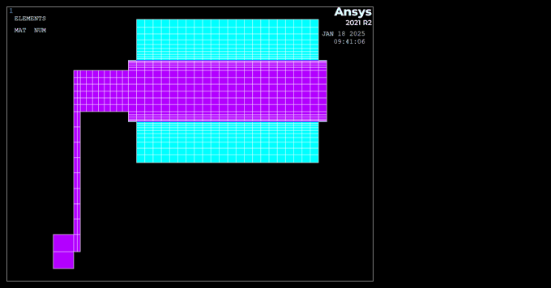
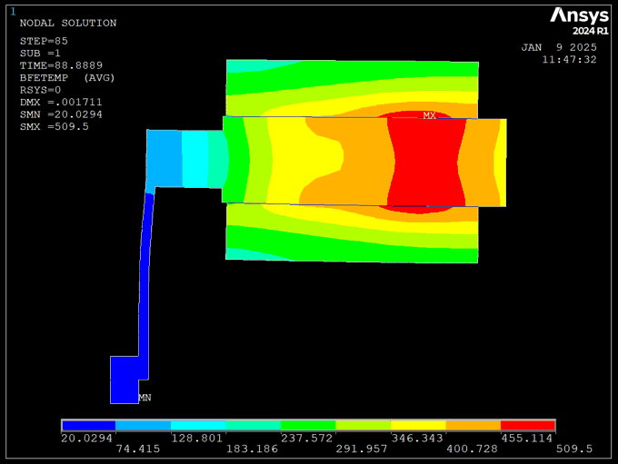
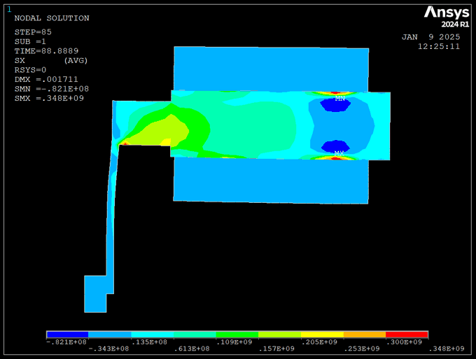
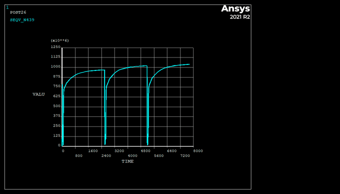
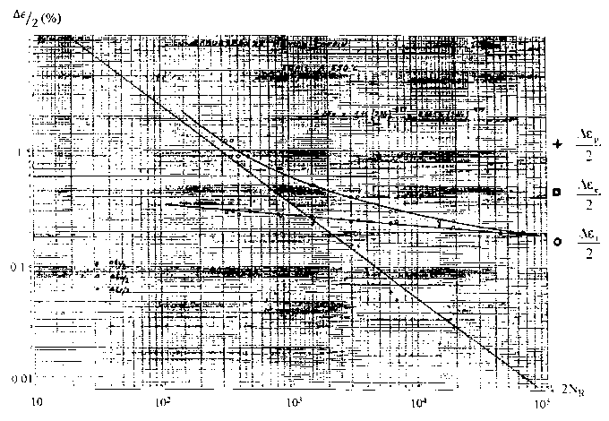

Thermomechanical Contact in Emergency Braking
Transient, coupled thermal-structural finite element simulation of a train brake pad–disk contact, from frictional heat generation and hot-banding to cyclic plasticity and fatigue life.

Abstract
This project models the thermomechanical behavior of a train brake pad–disk contact during emergency braking, using a 2D-axisymmetric APDL model in Ansys with strongly coupled structural–thermal elements. An initial train speed of 320 km/h is brought to a full stop, with the disk's temperature-dependent elastic–plastic material behavior (multilinear kinematic hardening) capturing how heat softens the disk as braking proceeds. The results show a self-reinforcing thermomechanical feedback loop: non-uniform cooling at the disk edges produces non-uniform thermal strain, which concentrates contact pressure and heat flux into two "hot bands," peaking around the midpoint of the braking event before decaying as wear homogenizes the contact surface. Residual tensile stresses left behind after cool-down are identified as the most critical failure driver, motivating a follow-up study of contact thermal resistance (which suppresses the tensile residual stress) and a three-cycle repeated-braking case used to estimate low-cycle fatigue life via the Manson–Coffin relation.
Simulation results




Fatigue life estimate
Using the elastic and plastic strain amplitudes extracted from the three-cycle simulation, the Manson–Coffin low-cycle fatigue relation was fit to estimate the number of braking cycles the disk could sustain before crack initiation — on the order of 500 cycles for this loading case, underscoring how residual tensile stress from repeated emergency braking can become the dominant fatigue-life limiter.
